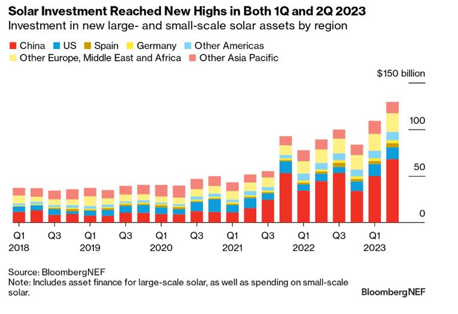
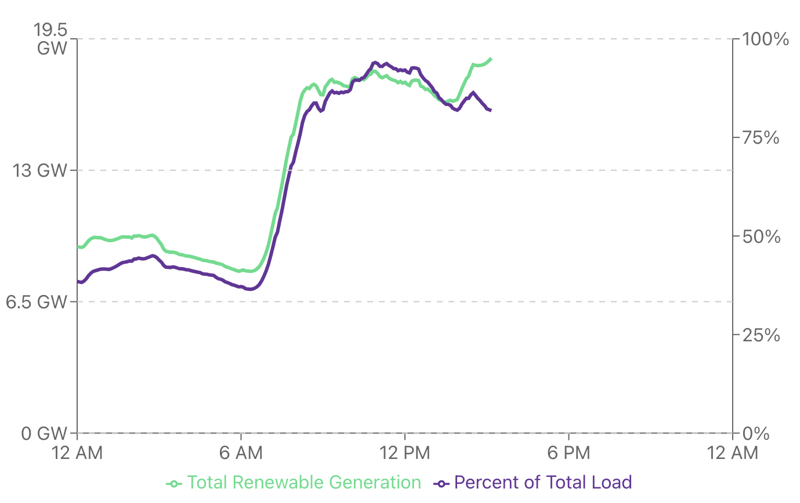

I spent some time (in Fall 2023) reading about solar deployment. Some facts that struck me:
- Solar deployment is now running at about $500 billion per year, which means that about 0.5% of global GDP is being spent on solar deployment. This figure is up an improbable 43% Y/Y. Source: BloombergNEF

- If one takes at face value the estimate that the world will deploy 300–400 GW of solar in 2023 (IEA), and that 1 MW of solar =~ 5 acres, we're deploying roughly 3–4 acres of solar per minute.
- 54% (29.1 GW) of the new electricity generation capacity in the US in 2023 will be solar. The next biggest category is battery storage. We'll add more than 4x more solar than natural gas, the leading fossil fuel-based category. Source: EIA
- As of September, the estimate increased to 32 GW, representing a 52% increase over 2022.
- In the EU, solar additions in 2022 (41 GW) were up 47% from 2021 (28 GW). Source: SolarPower Europe
- At peak, renewables provide up to ~90% of California's electricity. Of renewable sources in California, solar is by far the largest. Source: GridStatus.io

- In Spain, electricity provided by solar increased 8 percentage points Y/Y, from 16% to 24%. Source: Reuters